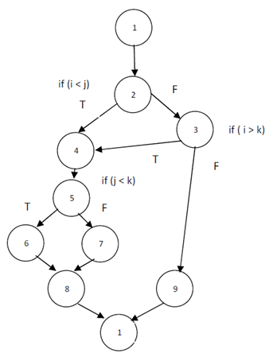

thisCodeSucks
and other tales of developer hubris...
A talk by Russell Anderson
Some back story
- Front End Developer
- full time ~5 years
- mostly self-taught / colleague-taught
- no computer science background
- jQuery => Backbone => Angular 1.x => React

Build the plane while flying
Technical Debt
Improving as a dev
@toddmotto if you're not ashamed of your code when you revisit it, you're not a good developer. #truestorybro
— Txus Ordorika (@txusinho) October 12, 2016
Turning into a monster
Borderline obsessive about how I do things
This code suuuuuuuuuuuuuuuuuuuuuucks.
REFACTORING
I rewrite the whole damn thing.
Regressions, of course
When code that worked, doesn't anymore. Because of something I did. Probably.
Regressions are the worst
- Unplanned for
- Difficult to spot
- Erode confidence in the whole team
Who is this talk for? Me.
What do I need to tell myself?
- A few maxims worth repeating
- How I decide if I should refactor
- How do I refactor the right way to avoid regressions?
Just because I didn't write it, doesn't mean it sucks.
That line of code is probably there for a reason.
There is a difference between technical debt and code that just irks me.
What does it matter if
my code is perfect
but my software sucks?
Game time.
Should I refactor?
Scenario:
Many of my dependencies are well out of date, some are unsupported altogether.
YES
Scenario:
Swapping switch statements in favor of Object literals.
var odds;
switch(team) {
case 'Titans':
odds = '100 to 1';
break;
case 'Patriots':
odds = '3 to 1';
break;
}
var oddsObject = {
'Titans': '100 to 1',
'Patriots': '3 to 1'
};
var odds = oddsObject[team];
 Todd Motto: "Replacing switch statements with Object literals"
Todd Motto: "Replacing switch statements with Object literals"
NO
Scenario:
I've created a generic utility function to replace code that's been copied and pasted in several places
function handleErrors(response) {
if (response.ok) {
return response.json();
} else {
var error = new Error(response.statusText);
error.response = response;
alert('What did you do?!??!?');
throw error;
}
}
fetch("api/items")
.then(handleErrors)
.then(json => {
console.log(json);
}).catch(error => {
console.log(error);
});
NO, but...
Scenario:
The backend changes the name of a model
// leave the same
var cocaCola = data.new_coke;
// or change it
var newCoke = data.new_coke
YES
Scenario:
A view design changes dramatically
YES, but...
Scenario:
A function written by ex-employee is extremely complex and convoluted, but works without bugs
NO

Refactor the right way
Tests
- If they're not there, write them
- Forces you to understand the code deeply
- Strong business justification for refactoring
- Doubles as de facto documentation

Documentation
Write it all down
Be careful with refactor tools
- grep - find via command line
- sed - find and replace via command line and regex
- jscodeshift & js-codemod - updating patterns (e.g. ES6)
While I'm not sure arranging your Kanban board by "stages of grief" is good for morale, I still love this: https://t.co/NUeSkiyabH pic.twitter.com/32lmsRg8ie
— Richard Seroter (@rseroter) October 17, 2016
Dedicate time to do it
(be transparent about it)
Easing your annoyance can be good for the business
Slides
http://russelljanderson.com/refactor-slides